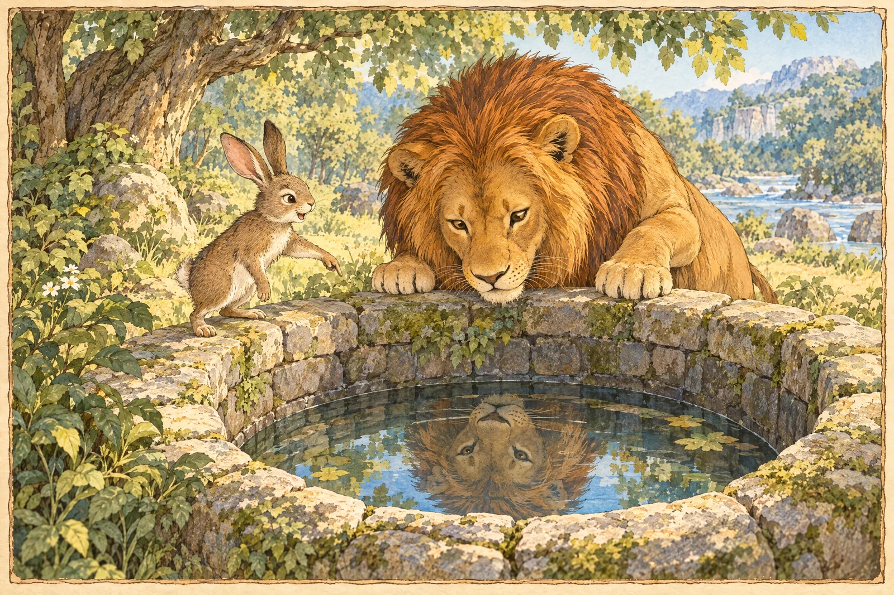
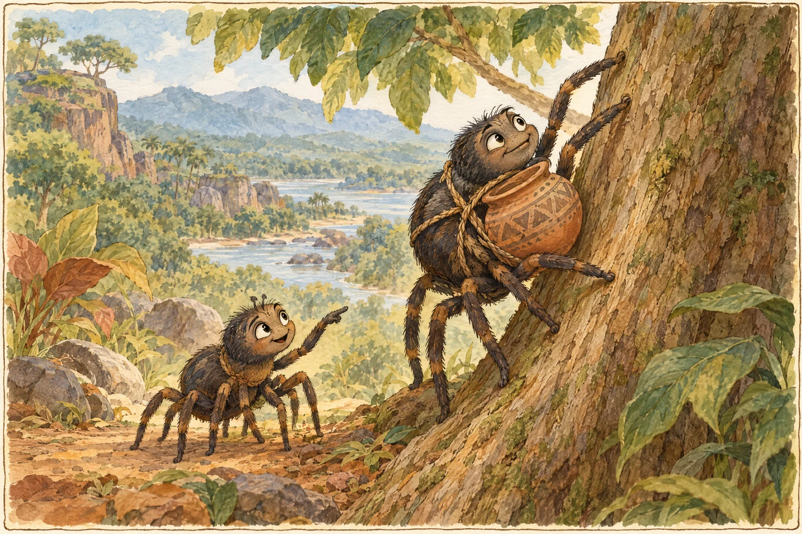

THE WORLD FOLKTALE COLLECTION
Every culture leavesbehind a story.
A global collection of folktales, fables and traditional stories, illustrated and retold for today's readers.
112 stories · Traditional tales, thoughtfully retold.


STORY OF THE DAY
FROM AROUND THE WORLD
A story to discover
A traditional tale selected from the TaleAtlas collection.
FIVE REGIONS · MANY VOICES
A world between the covers.
Follow a story across continents, landscapes and generations.
THE STORY LIBRARY
Find a story to wander into.
Discover stories from different cultures and traditions. Search by title, place, character or theme.
A note for grown-ups
Stories travel. Versions change.
Folktales are shared across generations and borders, so their origins and details can vary. TaleAtlas offers original, child-friendly retellings of traditional stories, with cultural notes where possible. It is a reading project, not a claim that each tale has one definitive version.